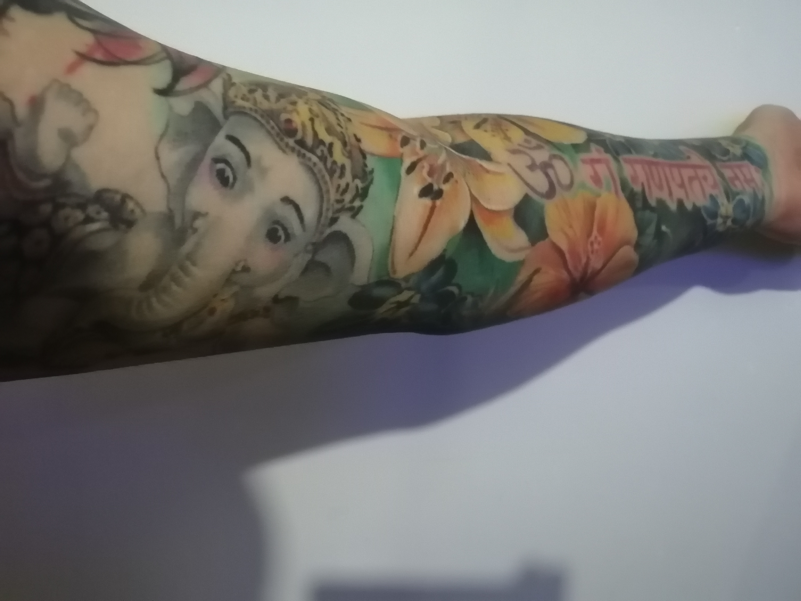

Sobre mi
Actualmente me encuentro laborando como Analista de Sistemas en la empresa Petstar, su rubro es la recolección de Pet para la creación posterior de botellas de plástico de uso alimentario para Coca-Cola. Afortunadamente la empresa crece y es necesario apoyar en la implementación de nuevas Plantas, apoyo con la infraestructura (TIC) que es necesaria para levantar el sitio nuevo.
Mi formación académica fue en la Universidad TecMilenio, en esta me recibí como Ingeniero en Desarrollo de Software, aprendiendo lenguajes como C, C++ y Java, en mis primeros pasos como desarrollador trabaje por cerca de 4 años, para posteriormente aprender acerca de redes, teniendo cursos como ITIL siendo una guía de buenas prácticas para la gestión de servicios de tecnologías de la información.
El destino de hizo volver a mirar hacia la programación y creación de sitios Web, retomar esos conocimientos que tenia guardados en un baul (así lo pienso o visualizo yo), ya que en mi trabajo se tienen mas áreas de crecimiento que llevan a saber mas sobre el desarrollo he implementación. Seguir creciendo y aprendiendo, para vencer esos miedos o frustraciones que llegue a tener al desarrollar. Dentro del mundo de sistemas llevo ya cerca de 15 años, desde desarrollando, dando asistencia Tecnica o Soporte y ahora como Analista de sistemas.

En mi vida personal tengo el gusto por los animales, tengo dos perros, 4 tortugas, unos cuantos peces y dos pájaros, disfruto de ir a Raves de música electrónica, Conciertos de Rock/Metal, pero sobre todo adicto a los Tatuajes, tengo los brazos y pecho rayados, mi tema para tatuarme siempre a sido sobre mis creencias, creo en Ganesha (Dios cabeza de elefante), en Shiva y Kali, han sido mis deidades para poder salir adelante, creer que puedo y pensar que tengo el suficiente conocimiento para llegar al Éxito que Deseo.
